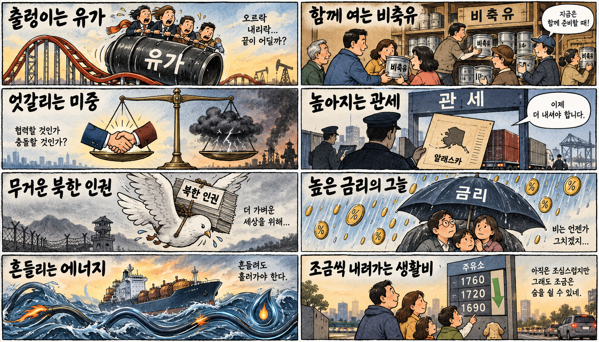
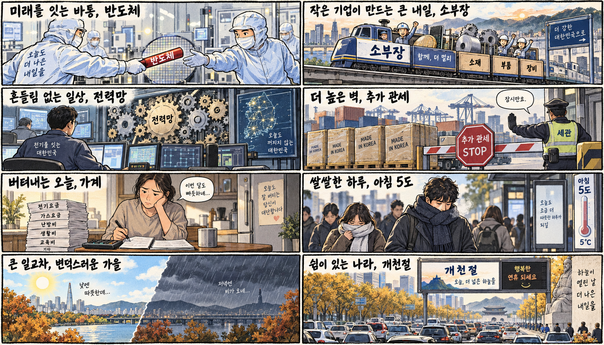

01
프리포트맥모란 · 69.56→72.04달러 · +3.57%
내용요약 시가 대비 +3.57%로 조사 종목 중 상승폭이 컸습니다.
예상여파 원자재 관련 투자심리에 우호적이지만 국내 소재주와의 실적 연결은 기업별로 확인해야 합니다.
MORNING_BRIEFING_20261003
작성 시각: 2026-10-03 06:36 KST · 직전 미국 정규장과 2026-10-03 KST 당일 공개 기사 기준
직전 미국 정규장인 10월 2일 뉴욕증시는 다우 +0.49%, S&P 500 +0.73%, 나스닥 +1.19%로 상승했습니다. 미국 9월 고용 둔화 보도로 금리 인상 기대가 후퇴한 가운데 기술주 위험선호가 회복됐습니다. 한국 증시는 전날 KOSPI가 7,000선을 넘었지만 KOSDAQ은 약보합이어서 지수보다 업종별 차별화에 유의해야 합니다.
| 지수 | 종가 | 등락률 | 한국 증시 시사점 |
|---|---|---|---|
| 다우존스 | 51,176.96 | +0.49% | 고용 둔화와 금리 기대 변화 점검 |
| S&P 500 | 7,722.72 | +0.73% | 고용 둔화와 금리 기대 변화 점검 |
| 나스닥 종합 | 27,190.86 | +1.19% | 기술주 위험선호 회복이 반도체 심리에 우호적 |
고용 둔화와 금리 기대 변화로 미국 기술주 위험선호가 회복됐습니다.
전일 +0.46%, 시가 대비 +0.94%로 7,000선 위에서 마감했습니다.
G7의 비축유 1억배럴 방출 합의로 유가는 하락했지만 절대 수준은 여전히 높습니다.
토요일 휴장과 검증 표본 부족으로 공식 추천 없이 현금 관망을 유지합니다.
10월 2일 보고서는 공식 추천을 내지 않았습니다. 게시 당시 판단을 유지하며 사후 종목을 추가하지 않습니다.
| 시장 | 종가 | 등락률 | 기준 |
|---|---|---|---|
| KOSPI | 7,003.74 | +0.46% | 10월 2일 정규장 · 시가 대비 +0.94% |
| KOSDAQ | 893.29 | -0.11% | 10월 2일 정규장 · 시가 대비 +0.01% |
| 다우존스 | 51,176.96 | +0.49% | 미국 10월 2일 정규장 |
| S&P 500 | 7,722.72 | +0.73% | 미국 10월 2일 정규장 |
| 나스닥 종합 | 27,190.86 | +1.19% | 미국 10월 2일 정규장 |
나스닥 +1.19%로 3대 지수 중 가장 강했습니다.
프리포트맥모란 +3.57%, 옥시덴털 +2.06%로 원자재 관련주가 강했습니다.
코인베이스 -5.87%, 스트래티지 -3.52%로 변동성이 확대됐습니다.
인텔 -3.90%, 마이크론 -2.94%로 업종 내부 차별화가 나타났습니다.
내용요약 시가 대비 +3.57%로 조사 종목 중 상승폭이 컸습니다.
예상여파 원자재 관련 투자심리에 우호적이지만 국내 소재주와의 실적 연결은 기업별로 확인해야 합니다.
내용요약 시가 대비 +2.92%로 대형 성장주 중 강세를 보였습니다.
예상여파 성장주 위험선호에는 긍정적이나 국내 이차전지 전반의 매수 근거로 단순 확대하면 안 됩니다.
내용요약 시가 대비 +2.47%로 우주산업 종목의 변동성이 두드러졌습니다.
예상여파 국내 우주 관련주는 계약과 실적을 확인해야 하며 테마성 추격은 피해야 합니다.
내용요약 시가 대비 -5.87%로 조사 종목 중 낙폭이 가장 컸습니다.
예상여파 국내 가상자산 연계주의 단기 심리에 부담이며 높은 변동성을 전제로 대응해야 합니다.
내용요약 시가 대비 -5.74%로 정보기술 서비스 종목이 약했습니다.
예상여파 기업 IT 지출과 컨설팅 수요의 둔화 우려가 관련 서비스 기업 가치평가에 영향을 줄 수 있습니다.
전날 KOSPI는 7,003.74로 전일 종가 대비 +0.46%, 시가 대비 +0.94%였고 KOSDAQ은 전일 종가 대비 -0.11%, 시가 대비 +0.01%였습니다. 밤사이 나스닥 상승은 반도체·성장주 심리에 우호적이지만 마이크론과 인텔은 약세였습니다. 오늘은 토요일로 국내 증시가 휴장하므로 월요일 개장 전 금리·유가·환율과 주말 추가 뉴스를 다시 확인해야 합니다.
오늘은 추천 없음 — 현금 관망
오늘은 토요일로 한국 증시가 휴장합니다. 당일 시가 진입과 호가 유동성을 확인할 수 없고, 전일까지 수급·컨센서스·공식 촉매·30건 이상의 확률 보정 표본을 모두 갖춰 종합점수 75점·상승확률 60%·예상 손익비 1.5를 검증한 후보도 없습니다.
관심 연결종목 반도체 소부장, 전력망, 에너지 관련주는 월요일 개장 뒤 상대강도 관찰 대상일 뿐 매수 추천이 아닙니다. 갭 상승 시 추격매수하지 않습니다.
고용 둔화 해석이 금리 기대와 달러에 어떻게 반영되는지 봅니다.
발표가 실제 공급과 브렌트유 하락으로 이어지는지 확인합니다.
알래스카 투자 발언의 공식 협상 내용과 산업별 영향을 구분합니다.
아침 5도, 건조한 대기와 일요일 비 예보에 대비합니다.
핵심 요약: 유럽 AI 초기기업을 향한 대형 펀드와 제조·환경 현장의 AI 적용이 동시에 확대되고 있습니다. 추론 성능의 빠른 진전 뒤에는 금융권 해킹처럼 보안과 검증 부담도 함께 커지고 있습니다.
내용요약 기계공학 설계 과정에 인공지능을 적용하는 헤스투스가 740만달러 규모의 초기 투자를 유치했다는 당일 보도입니다.
예상여파 제조 설계 자동화의 적용 범위가 넓어질 수 있으나 실제 설계 정확도와 산업별 인증 성과가 사업성을 좌우합니다.
내용요약 미스트랄 투자사 헤드라인이 유럽 인공지능 초기기업을 겨냥한 4억달러 펀드 조성을 마쳤다는 당일 보도입니다.
예상여파 유럽 AI 생태계의 초기 자금 공급에는 긍정적이며 미국 중심 자본·모델 의존도를 낮추는 경쟁이 빨라질 수 있습니다.
내용요약 인공지능 추론 성능이 수학·바이러스학·사이버보안에서 기존 예측보다 빠르게 진전되고 있다는 당일 보도입니다.
예상여파 연구 생산성 향상 기대와 함께 검증 절차, 오답 전파, 고위험 분야의 인간 감독 기준이 더 중요해집니다.
내용요약 인공지능을 활용한 해킹 위협이 은행권을 겨냥하면서 금융당국과 금융사의 보안 대응이 강화된다는 당일 보도입니다.
예상여파 인증·이상거래 탐지 투자는 늘겠지만 공격과 방어 양쪽의 자동화로 운영 리스크와 규제 비용도 커질 수 있습니다.
내용요약 산업폐수 처리 공정에 인공지능 자율운영 기술을 개발하는 사업이 본격화됐다는 당일 보도입니다.
예상여파 환경·제조 현장의 AI 적용은 비용 절감 기회지만 센서 데이터 품질과 안전한 수동 전환 체계가 필수입니다.
핵심 요약: G7의 비축유 1억배럴 방출 합의가 유가에 단기 완충 효과를 냈습니다. 미중은 충돌 관리 합의를 시험받고 있으며, 한국은 알래스카 투자·관세 압박과 북한 인권 외교를 함께 살펴야 합니다.
내용요약 주요 7개국이 비축유 1억배럴 방출에 합의하면서 서부텍사스유가 장중 5% 하락했다는 당일 보도입니다.
예상여파 단기 에너지 가격과 물가 압력을 낮출 수 있지만 공급 불안이 계속되면 효과의 지속 기간은 제한될 수 있습니다.
내용요약 미국과 중국이 정상 외교 뒤 8개 분야의 합의를 도출했으며 경쟁 속 충돌 관리가 새 시험대가 됐다는 당일 보도입니다.
예상여파 교역 불확실성 완화에는 도움이 되지만 기술·안보 분야의 이행 여부가 글로벌 공급망 안정성을 좌우합니다.
내용요약 유럽연합이 유엔총회에 북한인권결의안을 제출하고 러시아 전쟁 지원 중단을 촉구했다는 당일 보도입니다.
예상여파 대북 외교와 제재 논의가 인권·안보 의제와 함께 진행되며 한반도 주변 긴장이 이어질 수 있습니다.
내용요약 미국이 한국의 알래스카 투자 문제를 관세와 연계해 압박했다는 당일 보도입니다.
예상여파 대미 투자 협상과 에너지 프로젝트의 비용·수익성을 분리해 검토해야 하며 자동차·소재 수출 불확실성이 커질 수 있습니다.
내용요약 주요 7개국의 비축유 방출 합의 이후 국제유가가 하락했다는 당일 보도입니다.
예상여파 운송·화학·항공의 비용 부담에는 완충 요인이지만 브렌트유가 높은 수준이라 소비자 체감 개선은 점진적일 수 있습니다.

핵심 요약: 반도체 소부장과 전력망 산업의 성장 기대가 이어지지만 중국의 한국산 소재 추가 관세와 미국 에너지 투자 압박이 수출 비용 변수가 됐습니다. 개천절은 아침 5도와 큰 일교차에 대비해야 합니다.
내용요약 코스닥이 반도체 소재·부품·장비 종목을 중심으로 상승 흐름을 이어갔다는 당일 보도입니다.
예상여파 반도체 공급망의 투자심리는 유지될 수 있으나 단기 급등 종목은 거래대금과 실적 확인 없이 추격하지 않아야 합니다.
내용요약 중국이 한국산 폴리아세탈에 추가 관세를 유지해 기업별 세율 관리가 중요해졌다는 당일 보도입니다.
예상여파 화학·소재 기업의 중국 수출 채산성과 가격 협상력이 압박받을 수 있어 품목별 노출도를 살펴야 합니다.
내용요약 복잡한 전력망 운영 경험을 바탕으로 한국 전력 산업의 성장 가능성을 조명한 당일 보도입니다.
예상여파 데이터센터와 전기화 수요는 기회지만 수주·규제·설비투자 집행을 실제 계약과 구분해 평가해야 합니다.
내용요약 한국이 미국 원유회수 프로젝트에 84억달러를 투입한다는 미국 측 발언을 전한 당일 보도입니다.
예상여파 에너지 협력 확대 가능성과 함께 투자 조건, 회수 기간, 국내 기업 참여 범위의 공식 확인이 중요합니다.
내용요약 개천절 아침 최저기온이 5도까지 내려가고 낮과 밤의 기온차가 크다는 당일 예보입니다.
예상여파 외출 시 겉옷을 준비하고 내륙 서리·건조한 대기, 취약계층 건강과 농작물 관리에 유의해야 합니다.
